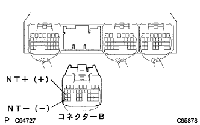

DTC P1725/37 タービン回転数センサ系統 |
| DTC No. | DTC検出条件
| 点検部位 |
| P1725/37 |
|
|
| 手順1 | トランスミッション レボリューション センサ単体点検（NT） |
 |
インプットシャフト回転数センサのコネクタを切り離す。
トヨタエレクトリカルテスターを使用して、端子間の抵抗を測定する。
|
| ||||
| OK | |
| 手順2 | ワイヤハーネスおよびコネクター点検（インプットシャフト回転数センサ(NT)-エンジンコントロールコンピユータ） |
|  |
インプットシャフト回転数センサのコネクターを接続し、エンジンコントロールコンピユータのコネクタBを切り離す。
トヨタエレクトリカルテスターを使用して、B27(NT+)←→B35(NT-)端子間の抵抗を測定する。
(端子配列は参照)
|
| ||||
| OK | ||
| ||